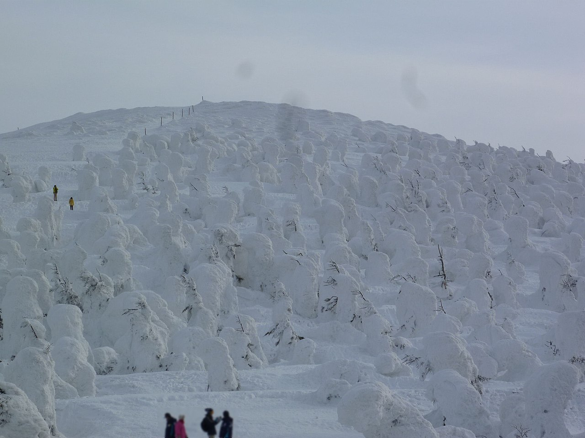
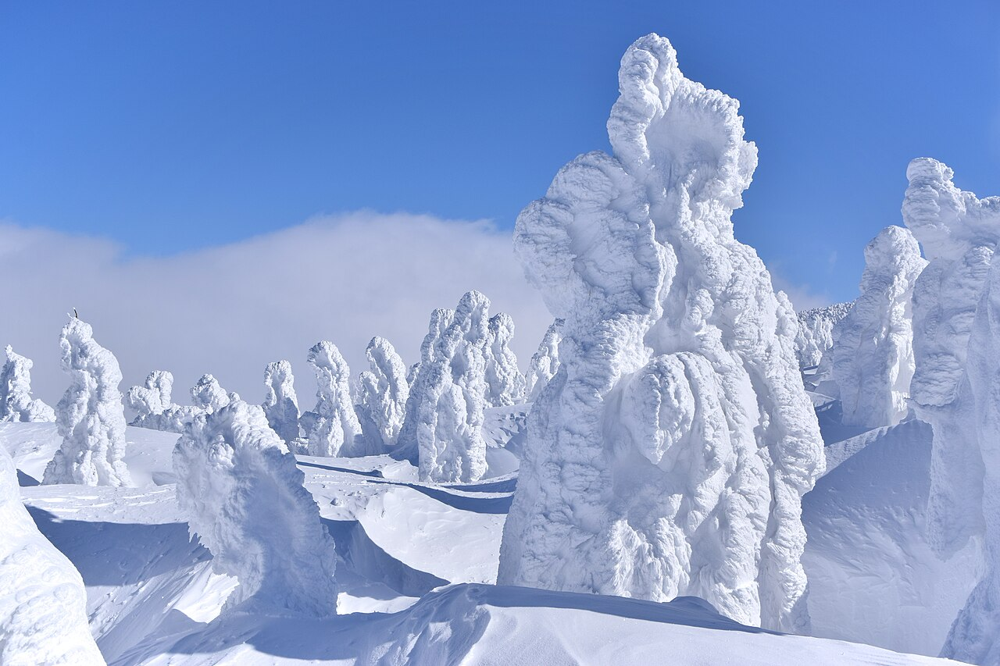

센다이 IN → 아오모리 OUT. 자오 · 게토+아피 · 핫코다를 북상하며 2박씩.
이와테 한 곳에 눌러앉아 게토와 아피만. 종주는 포기, 이동일 0.
센다이 → 아오모리 라인의 핵심은 거리가 아니라, 이 코스가 눈 기후가 다른 두 지역을 가로지른다는 데 있다.
한쪽을 망치는 폭설·강풍이 보통 다른 쪽은 좋게 만든다. 그래서 이 트립은 하루를 통째로 날릴 확률이 구조적으로 낮다.
날짜도 중순보다 셋째 주가 낫다. 수빙(樹氷, 스노우몬스터)이 1월 말~2월 중순이 절정이라, 셋째 주면 자오와 핫코다 양쪽에서 만들어지는 과정을 본다. 중순이면 그냥 놓친다.


비행 시간이 짧아도 아주 이른·늦은 스케줄이 없어서 첫날과 마지막 날은 통째로 날아간다. 그래서 9일은 스키 7일이 되고, 토~수는 스키 3일이 된다.
스키 3일짜리 일정에 센다이→아오모리 종주를 욱여넣으면 긴 이동 두 번에 그 3일의 대부분을 쓴다. 그래서 안 B는 안 A를 줄인 게 아니라 다른 트립이다. 줄이는 게 아니라 아예 포기하는 쪽이 맞다.
게토/아피 블록을 화~목에 둔 건 의도적이다. 일본 스키장은 주말이 훨씬 붐빈다.
넓은 지형에 온천 마을, 그리고 수빙. 다만 수빙 절정은 1월 말~2월 중순이라 셋째 주는 “형성 중”을 보는 정도다. 절정은 아니라는 걸 알고 가는 게 낫다.
거점 하나에 산 두 개, 그리고 두 산이 서로의 날씨 보험이다. 현지에서 통하는 공식이 정확히 이 스왑이다 — 해안에 폭설이 때리면 게토, 바람이 심해지면 아피.
로프웨이로 접근하는 투어 루트, 그리고 자오보다 거칠고 사람 적은 수빙.
자오와 핫코다는 버린다. 게토+아피만 남기는 이유가 분명한데, 이 페어의 가치가 “날씨가 둘 중 하나를 골라준다”는 것이고 그건 3일밖에 없어서 하루도 날릴 수 없을 때 정확히 필요한 성질이기 때문이다.
인천→아오모리 직항은 대한항공이 유일하고 주 5회 정도, 약 2시간 30분. 주 5회는 매일 뜨지 않는다는 뜻이라, “토 아웃 / 일 인” 형태가 그 요일이 실제로 있어야 성립한다.
일요일 편이 없으면 출국 공항이 센다이로 돌아가고, 북상 논리 전체가 뒤집힌다. 그러니 안 A에서 다른 걸 확정하기 전에 이것부터 본다.
센다이는 서울에서 훨씬 잘 연결된다. 안 B는 게토/아피에 제일 가까운 하나마키 공항이 쓸 만한 요일에 있는지 볼 가치가 있고, 안 되면 센다이 + 조금 긴 드라이브가 안전한 대안이다.
투어링 전용 하루는 트립 시간을 너무 많이 먹는다. 하치만타이 고원 투어링 데이는 뺀다. 대신 핫코다의 가이드 투어 루트는 로프웨이로 올라가서 시작하기 때문에, 스킨 붙이고 하루 종일 걷지 않고도 투어링 지형을 경험한다.
다만 핫코다는 가이드를 반드시 붙인다. 판단을 잘못했을 때 “아쉬운” 게 아니라 “위험한” 유일한 장소다.
핫코다는 1~2월에 블리자드와 강풍 운휴로 악명이 높다. 그러니 아오모리 계획을 핫코다 하나로 두지 않는다.
근처 아오모리 스프링(아자라)을 리프트가 도는 바람 대비책으로 붙여둔다. 게토/아피와 정확히 같은 패턴이다.
지금 확정 2명에 추가 모집 중이라, 이게 이 트립의 진짜 로지스틱 문제다. 해법은 단순하다.
리프트권·통행료·기름값은 운영사가 공시한 가격이라 그대로 쓰면 되고, 숙소와 항공은 날짜에 따라 움직이니 구간으로 둔다. 그래서 아래 숫자는 전부 “얼마에서 얼마”다. 하나로 뭉뚱그리면 없는 정밀도를 만들어내게 된다.
수하물은 이 표에 없다. 항공 라인은 항공권 값만이고, 스키 트립에서 수하물은 별도로 다룰 만큼 크다 — 바로 다음 섹션이 그 얘기다.
| 안 | 2명 | 4명 | 6명 | 스키 1일당 (4명) |
|---|---|---|---|---|
| 안 A · 9일 · 스키 7일 | 243–339만 | 215–296만 | 205–282만 | 30.7–42.3만 |
| 안 A-왕복 · 센다이 인/아웃 · 스키 6일 | 222–308만 | 196–269만 | 187–256만 | 32.6–44.9만 |
| 안 B · 토~수 · 스키 3일 | 127–182만 | 114–162만 | 109–156만 | 37.9–54.2만 |
안 B가 싼 게 아니라 짧은 것이다. 총액만 보면 절반이지만 스키 하루당으로 환산하면 안 B가 더 비싸다. 왕복 항공권과 렌터카 픽업 같은 고정비를 3일에 나누느냐 7일에 나누느냐의 차이다. 그러니 안 B는 “돈이 부족해서”가 아니라 “휴가가 5일밖에 안 나와서” 고르는 안이다. 예산으로 정당화하면 판단을 틀리게 한다.
아래 두 카드의 막대는 같은 축이다. 카드별로 100%를 다시 잡지 않았으니, 안 A의 식비 막대와 안 B의 항공 막대 길이를 그대로 비교해도 된다.
어느 한 항목도 지배적이지 않다. 제일 큰 게 식비라는 게 이 트립의 성격을 말해준다 — “한 군데서 아끼기”로는 총액이 안 줄고, 인원을 늘리는 쪽이 훨씬 크게 먹힌다.
여기선 항공이 제일 크다. 나머지가 전부 절반 이하로 줄어드는데 왕복 항공권만 그대로이기 때문이다. 짧은 트립일수록 항공권을 잘 사는 게 전부에 가까워진다.
스키 트립은 가방이 두 개인 여행이다. 스키/보드 백 하나와 평범한 캐리어 하나. 그리고 항공사들은 이걸 완전히 다른 두 방식으로 계산한다.
무게로 매기는 곳(제주항공·티웨이)은 총 중량이 기준선을 넘는 순간 킬로마다 받는다. 개수로 매기는 곳(피치·대한항공·아시아나)은 가방이 무거워도 개수만 맞으면 신경 쓰지 않는다. 스키 장비는 정확히 “무겁지만 개수는 적은” 짐이라, 이 차이가 그대로 돈이 된다.
| 항공사 | 과금 방식 | 항공권 | 수하물 (왕복) | 합계 |
|---|---|---|---|---|
| 제주항공 · 티웨이 | 무게 | 25–42만 | 21.0–40.6만 | 46–83만 |
| 피치 | 개수 | 25–42만 | 13.8–17.2만 | 39–59만 |
| 대한항공 · 아시아나 | 개수 | 38–60만 | 14.0만 | 52–74만 |
피해야 할 건 저비용 항공사가 아니라 무게 과금이다. 제주항공 기준으로 스탠다드 운임 무료 15kg를 넘는 순간 10kg 블록이 9만원, 그 위로는 kg당 1.4만원이다. 스키백 때문에 13–17kg가 초과되니 편도에만 10.5–20.3만원이 붙는다.
그리고 아직 무료 수하물이 있는 스탠다드 기준이다. 검색에 제일 먼저 뜨는 베이직 운임은 무료 수하물이 0kg이라, 그 싼 운임을 고르면 상황이 더 나빠진다.
이전 메모에 “LCC 스키백 편도 6만원쯤”이라고 적어둔 게 있는데, 틀렸다. 무게로 매기는 항공사에서는 2–3배다. 그때는 공시 요금표를 안 보고 어림한 값이었다.
같은 표에 있다고 같은 무게가 아니라서, 항목마다 출처의 성격을 붙여둔다.
겨울철 스터드리스 타이어는 12/1–3/31 기본 장착이라 추가금이 없다. 그래서 렌터카에서 확인할 건 타이어가 아니라 4WD 여부다.
포함 안 된 것: 스키·보드 렌탈(1일 ¥5,000–7,000), 여행자보험, 기념품, 자오 료칸 옵션.
빠진 항목: 센다이 → 아오모리 편도 반납료. 닛폰 렌터카 공시 요금(10km당 ¥880)으로 계산이 되면서 확인 목록에서 내려왔다 — ¥19,800–30,500, 그리고 안의 형태를 바꿀 만큼 크지 않다.